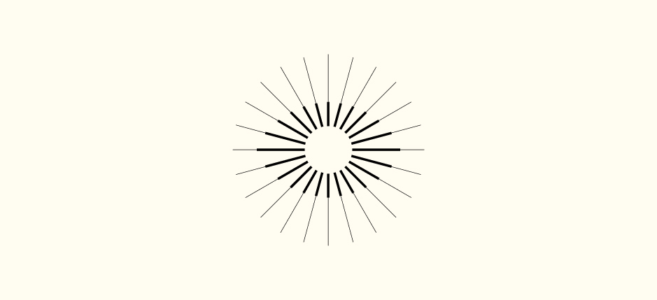
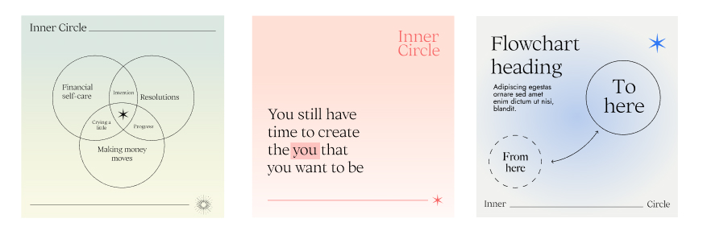

Overview
Inner Circle is a community based in London that provides tools and a safe space for people to focus on spiritual and personal growth.
The brand was looking for an identity that is high-end and down to earth. Based on the concepts of growth, wellness, accessibility and light.
Identity
Using the existing name, two set of lines merge in order to create an outer outline and an inner outline. The former becoming a circular shape and the latter taking the form of an eye.
The graphic element symbolises the expansive quiality of the personal development process and gives emphasis to growth and light.
Color system
The primary colour palette consists of three core soft tones of beige, pink and green, each one with a complementary tone for illustrations and backgrounds.
For flexibility and adaptability to the fast moving pace of social media, I created an extended color palette featuring three distinct saturated colors for variety. Coral, red and blue work as accent colours to increase the number of possible combinations.

Typography
To express the sense of lightness, the chosen typography for this project is Big Caslon and Ortica. For supplementary information, the sans serif Jost offers a balance.
In a functional way, this approach summarises the client's philosophy and vision.

Diagram system
For Inner Circle, it was essential to develop an elevated and highly flexible identity. Aiming for a dynamic visual system, I used a lenguage of lines to match the main symbol.
Depending on the context, the lines can be used to highlight connections and the stories we can tell through growth.
The brand library of graphic forms can work across many different formats, with a particular interest on social media.
Use case: social media
With the visual elements in place, I created diagrams in the brand colours that set a relaxed tone, to emphasise Inner Circle as an approachable and down to earth brand that is also high end.
The flexibility of the elements leads to an infinite number of possibilities for Inner Circle, all within the parameters of the new brand identity.
